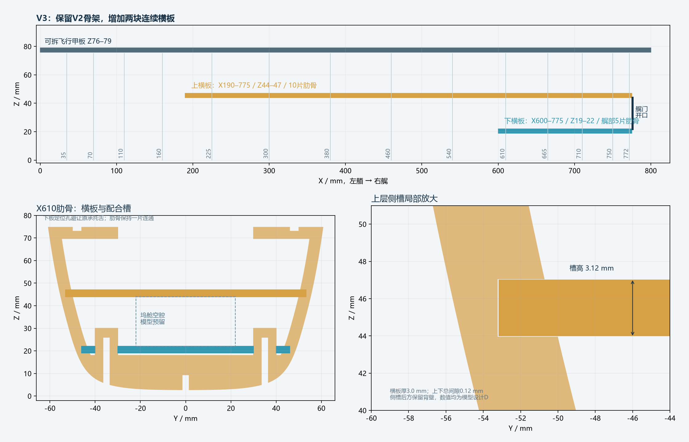
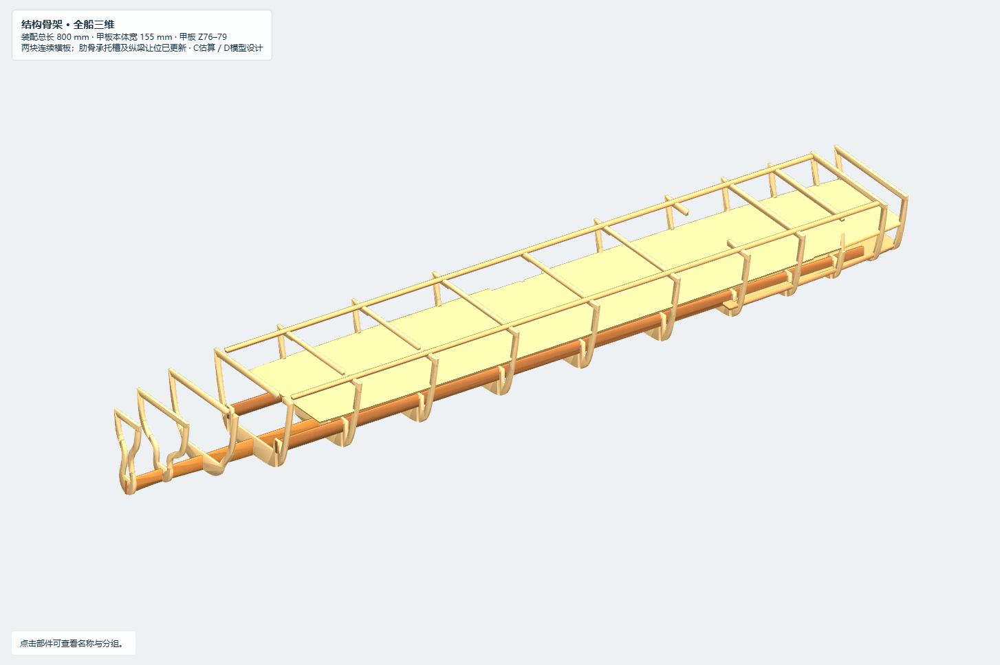
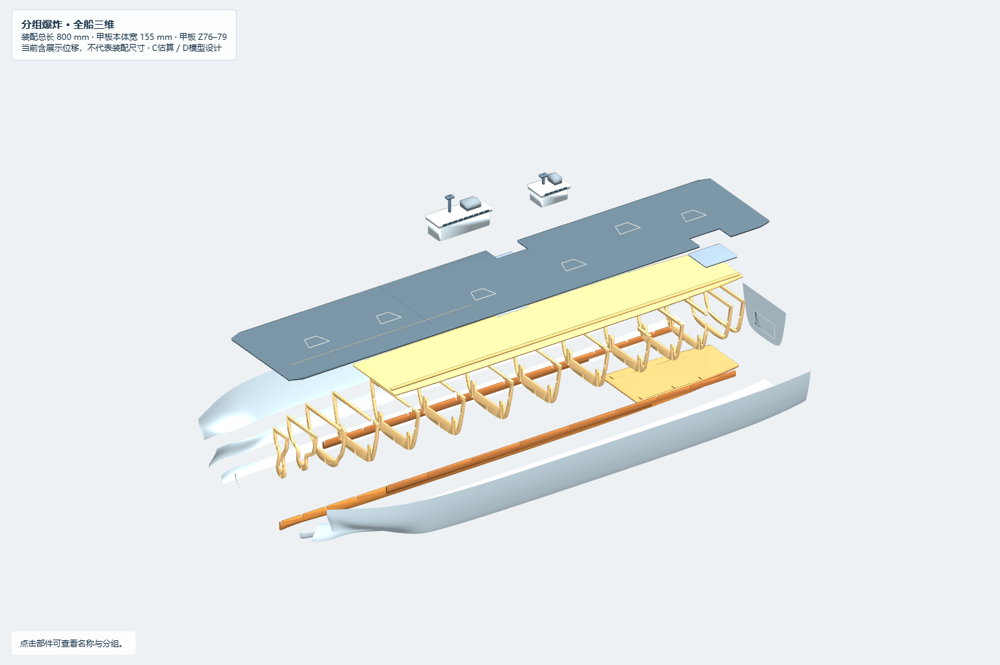

按用户确认的位置，以V2骨架改造。保留14片肋骨站位、船体/球鼻艏母面、龙骨和飞行甲板外观。原来的三块小内部甲板替换为两块连续横板；横板均为3 mm模型木板设计D，不是076真实内部甲板。
- 交互预览：切换“结构骨架”或“分组爆炸”；左侧分别勾选“上层横板”和“艉部下横板”。
- 完整装配、结构骨架、分组爆炸。单位毫米，零Mesh；板件为原生Extrusion。
- 参数、实际生成参数、槽与轮廓记录、原生回读、板件干涉检查、独立复核。
| 构件 | 纵向范围 X / mm | 高度 Z / mm | 覆盖肋骨 | 依据 |
|---|---|---|---|---|
| 艉部下横板 | 600–775，长175 | 19–22，上表面对齐艉门下沿 | 610、665、710、750、772，共5片 | 用户确认位置；具体毫米为模型设计D |
| 上层横板 | 190–775，长585 | 44–47，下表面对齐艉门上沿 | 225、300、380、460、540、610、665、710、750、772，共10片 | 用户确认向前到近等宽位置；前端板宽约为本板最大宽的94.76% |
| 飞行甲板 | 0–800 | 76–79 | 沿用V2 | 本轮未改动 |
艉门外观参考开口仍为Z22–44，两块横板分别位于开口下方和上方，不占坞舱开口。板边按现有船体截面逐步收窄，保留两侧升降机井；X710附近加局部边缘让位以保持肋骨背壁。板边依据板厚范围的低侧轮廓取形，不将3 mm厚板简单贴在零厚度船壳上。
水平接收槽高度 = MATERIAL_THICKNESS + FIT_CLEARANCE = 3.00 + 0.12 = 3.12 mm。槽以横板中心高度定位，上下各留0.06 mm名义间隙；CUTTING_KERF=0.15仅为切割工艺参考，尚未用于CAM。支承槽通常位于两舷肋骨内侧，升降机井处允许局部缺失/让位；槽后名义保留2 mm背壁。这是几何配合设计，不是全实体最小壁厚或强度认证。
下板在X610、665、710的左右承托舌处设6个封闭定位孔，每孔3.12×10.12 mm，让原肋骨U型承托舌穿过。没有将整条肋骨直接横切成多片。两条纵梁在下板区域下缘让至Z22.06，艉部互补槽中位由24.5改为26，最窄剩余腹部约3.94 mm。其余站位和基本骨架沿用V2。原三块小甲板及其局部支承舌移除。
为使上横板成为机库的模型底板，机库预留底从Z42移至Z47，前端移至X190；上限仍71，净高24 mm。坞舱预留仍X610–775、Y±22、Z22–44。没有借此宣称真实机库或真实动力舱位置。
- 静态板件：26件封闭连通实体，67对候选进行manifold精确布尔，零正体积交叠，阈值0.0001 mm³；所有肋骨保持单片连通。
- 下板覆盖5片、上板覆盖10片；正交板件与预留包络无正体积相交。
- 同名原生几何对比，船体、龙骨、飞行甲板、托条、升降平台和外观组等沿用V2；详见独立复核。外壳仍是开放的分块参考面。
- 网页已检查两种窗口、三种模式、八视角和360°旋转；无脚本错误或联网请求，分层开关可用。保存的Rhino命名视图采用范围自适应。
- NOT_CHECKED：Rhino桌面实际打开、两块刚性横板与肋骨的真实穿装路径、切割试片、木纹/强度、防水、重量浮态。静态无交叠不证明能够按任意顺序拼装。
- 既有蒙皮限制仍保留：1.25 mm骨架内缩尚未与3 mm实体蒙皮协调；蒙皮复曲面成型与800 mm成品包络需要后续设计。不能据本包直接切板或宣称可下水。
先分别隐藏上板、下板观察肋骨槽，再在爆炸模式查看6个定位孔。重点确认上板X190前端是否合适、下板长度是否符合意图，以及升降机井侧的局部承托。下一步应用真实板厚和切割试片验证槽配合，并先试验X610的肋骨/横板/纵梁组合装配路径，之后再放行整船制造。
本轮不新增实舰事实。公开资料与外观来源沿用V2，来源表备份。所有新内部结构均为D模型设计，Unknown实舰内部继续未知。原V2文件另存保留，包内previous保存改造前模型与脚本。



核查日期：2026-10-17。交付状态：可供人工结构评审。